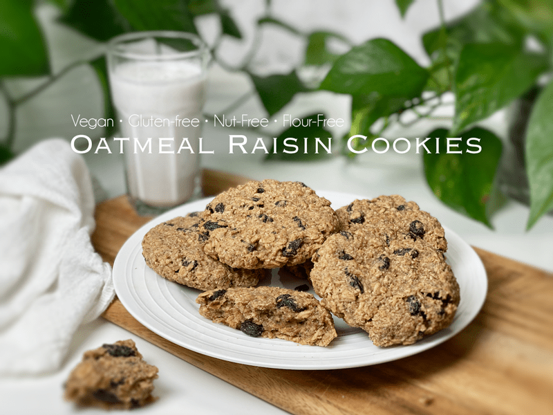
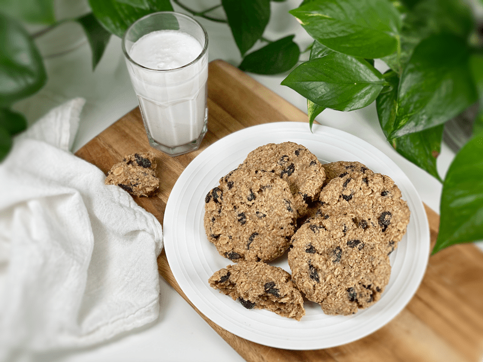

Oatmeal Raisin Cookies | Raw and Baked Option
Soft and chewy, with that trademark homemade flavor…these Oatmeal Raisin Cookies turned out perfectly. There’s something magical about their chewy texture, soft centers, plump raisins, and cinnamon flavor. Your family will love these easy gluten-free, vegan, nut-free, oil-free cookies, which are wholesome-tasting, and downright tummy-tickling-comforting.

This morning I woke up to the aroma of Oatmeal Raisin Cookies, as the dehydrator across the house was pushing out the most amazing smells–warm and delicious, which only made me want to snuggle down deeper into the blankets. I will admit that I had oatmeal this morning for breakfast… oatmeal that was shaped into a cookie, that is! Later, I shared these cookies with a handful of friends, each of us savoring bite after bite. We all have favorite childhood foods that carry on into adulthood, and cookies are often at the top of the list.
Unfortunately, cookies from our childhood were most likely loaded with unhealthy fats, sugars, and flours. So when someone takes a bite of a raw, healthier creation and it immediately takes them back to cherished memories… well, that instantly warms my heart and puts a smile on my face.
Further down the post, I will be sharing how you can make these cookies either raw/uncooked or baked. Interestingly enough, they don’t look or taste much different. But it’s nice to have options because not everyone has a dehydrator or perhaps the time to dehydrate them.

Gluten-Free Rolled Oats
- Truly raw oats take some effort to find, usually only online. If you are genuinely concerned about consuming only raw ingredients, be sure to double-check with the manufacturer. Most oats are lightly steamed to prolong their shelf life. You can read a short snippet here about different oats.
- The reason for using soaked and dehydrated oats is for health purposes only. If you wish to skip this process, go for it. But I did it to reduce the phytic acid and enzyme inhibitors, which allows my body to digest the oats with grace and ease.
Psyllium Husks
- For a vegan egg replacement, I use psyllium husks in this recipe. Do not skip this, as it holds the ingredients together.
- Be sure to use the husks, not the powder version, as it will create a denser texture in the cookies.
Apple Puree (Sauce)
- You can go about this in a couple of ways. If you have apples on hand, you can puree them in a food processor, or you can use store-bought or homemade applesauce.
- The applesauce adds sweetness to the cookies but also brings moisture to the batter, so don’t skip this ingredient.
Almond Butter
- Feel free to use store-bought or homemade. I have a post on this that can be found (here). If you use store-bought, read the ingredient list to see if other ingredients are added.
- You can use any nut butter in this recipe… just keep in mind that each nut has its own flavor profile, which will affect the outcome.
Sweeteners
- The raisins, applesauce, maple syrup, and stevia all add sweetness to the cookie. Once the batter is made, give it a taste test to see if it is sweet enough for you.
- If you don’t wish to use stevia, increase the maple syrup by 2 tablespoons and taste the batter.
 Ingredients:
Ingredients:
Yields 15 (1/4 cup measurement) cookies
Preparation:
- *Powder the oats by using your food processor. Pour in 1 cup of oats and process to a fine powder.
- *Make your own apple puree–place the diced apples (you can leave the peel on if you wish) in the food processor, fitted with the “S” blade, processing to a puree.
- In a medium-sized bowl, combine the powdered oats, raisins, psyllium, cinnamon, and salt. Give it a good stir. If any raisins are clumped together, separate them.
- I love to soak the raisins in warm water before adding to them. This step is optional, but it guarantees they are plump and soft. Blot dry before adding to cookie dough.
- Add the drained oats, apple puree, almond butter, maple syrup, and stevia. Mix well (I used my hands).
- Drain, rinse and squeeze the excess water from the soaked oats.
Dehydrator Method
- Using an ice cream scoop, place the dough on the teflex sheets of your dehydrator trays.
- The batter won’t spread while drying, so wet your hand (so the dough doesn’t stick) and gently press the cookies down to the desired thickness.
- Dehydrate for 1 hour at 145 degrees (F), then decrease to 115 degrees (F) for 8-10 hours.
- The dry time will depend on how thick your cookies are. They won’t dehydrate to a crispy cookie, due to the fat content in the almond butter.
- About 4 hours in, turn your cookies over onto just the mesh dehydrator sheet and continue dehydrating to your desired moisture. I like my cookie moist and soft, whereas Bob likes them more dried out.
- Why do I start the dehydrator at 145 degrees (F)? Click (here) to learn the reason behind this.
- I recommend storing these in a sealed container in the fridge, due to the remaining moisture.
- I like to wrap each cookie individually in plastic wrap, which makes it easy to grab one and head out the door, having a healthy snack on hand for later. Plus, because there is still moisture in this cookie, they tend to stick together a bit if stacked on one another.
Baking Method
- Preheat the oven to 350 degrees (F) and line a cookie sheet with parchment paper.
- Roll the cookie dough into a ball then gently flatten it in the palm of your hand. Set it on the cookie sheet with a little space between them. They won’t expand; we just want air to circulate around them.
- Bake for 20 minutes.
- As they bake, they don’t change color all that much, so don’t use that as an indicator of doneness. They should be firm to the touch.
© AmieSue.com